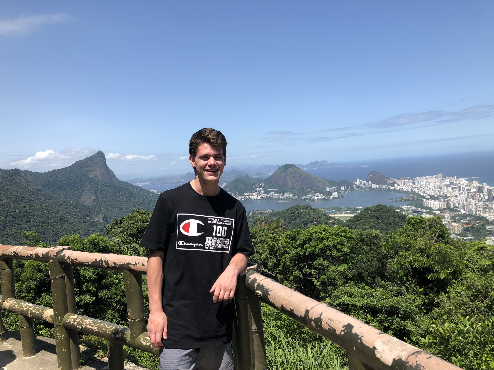
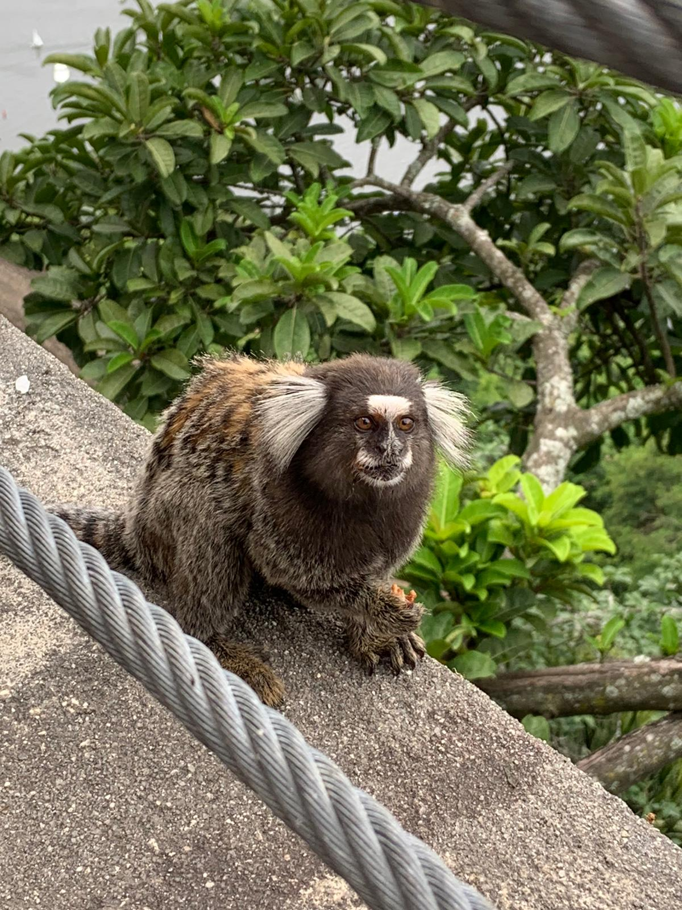
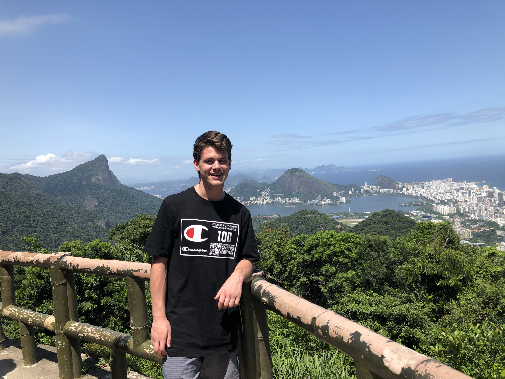
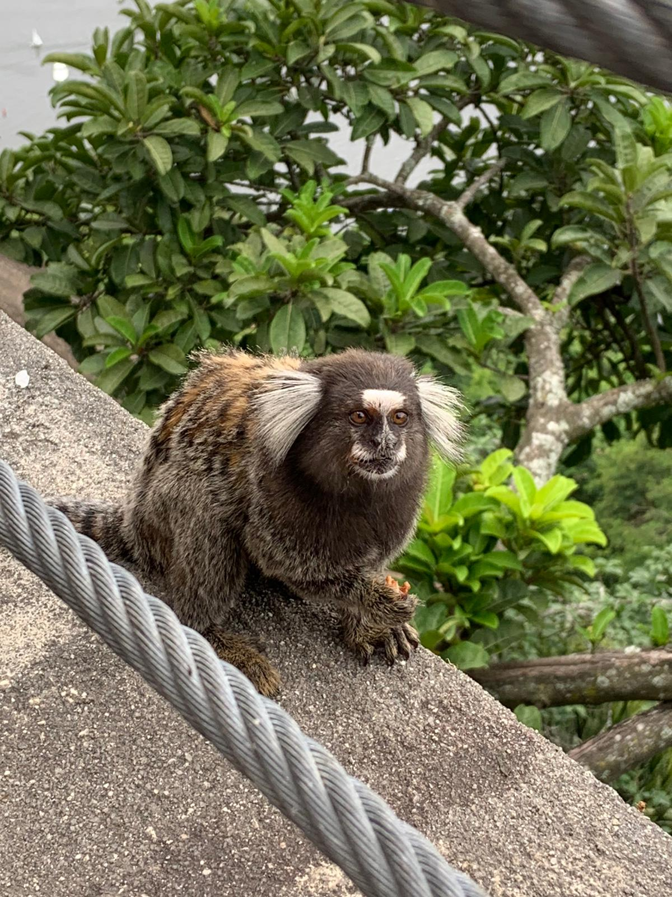
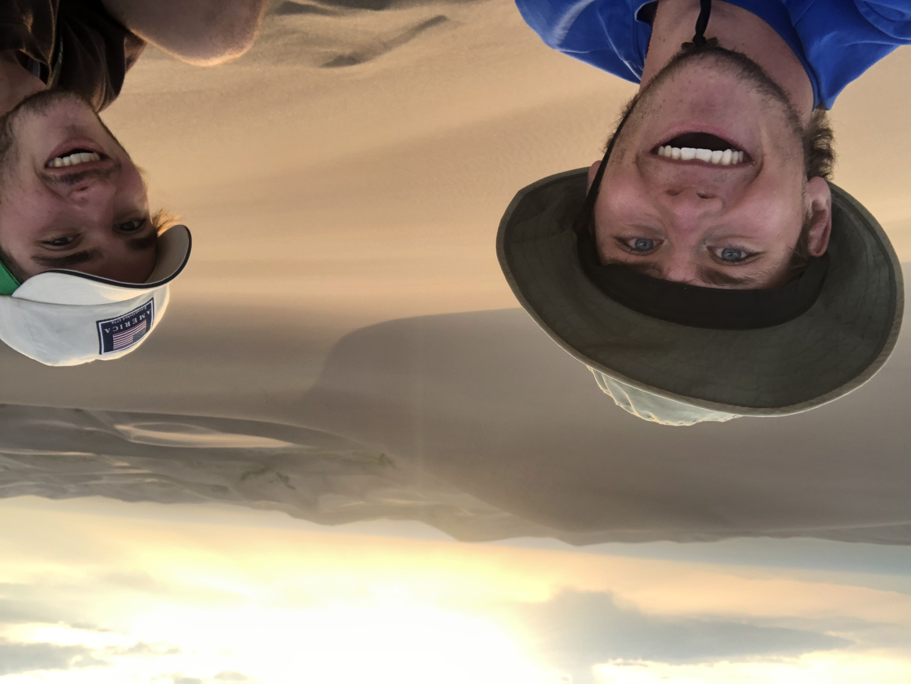
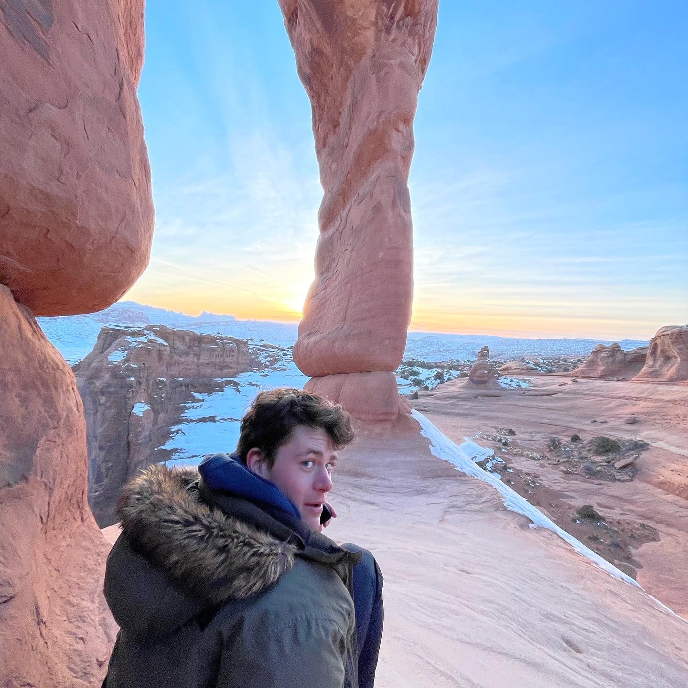
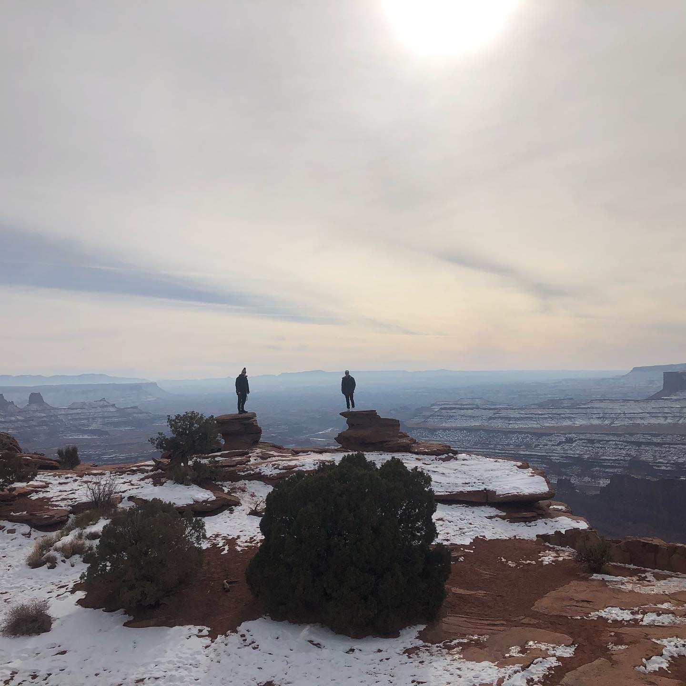
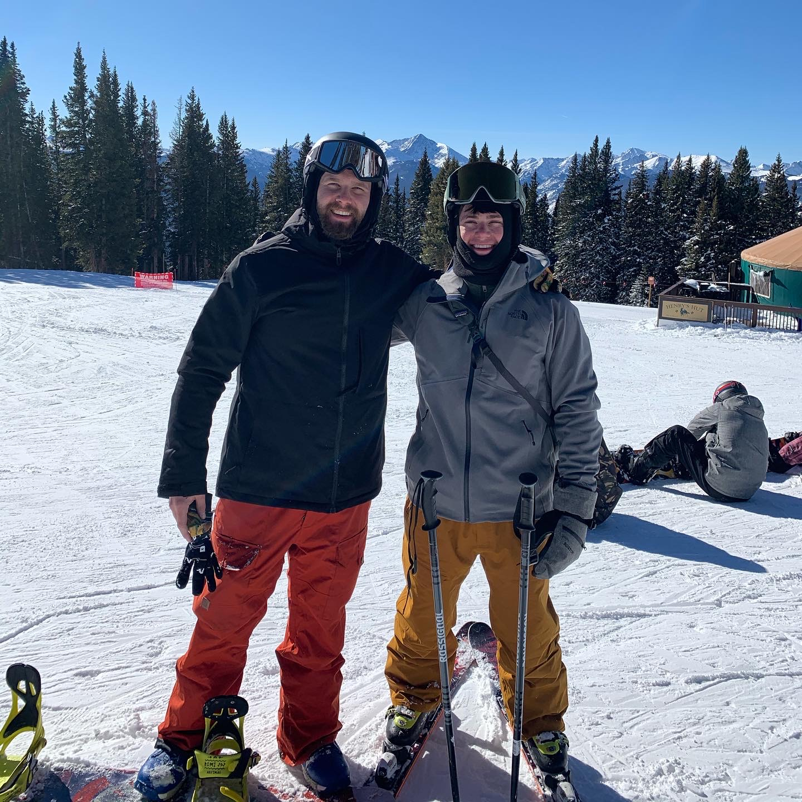
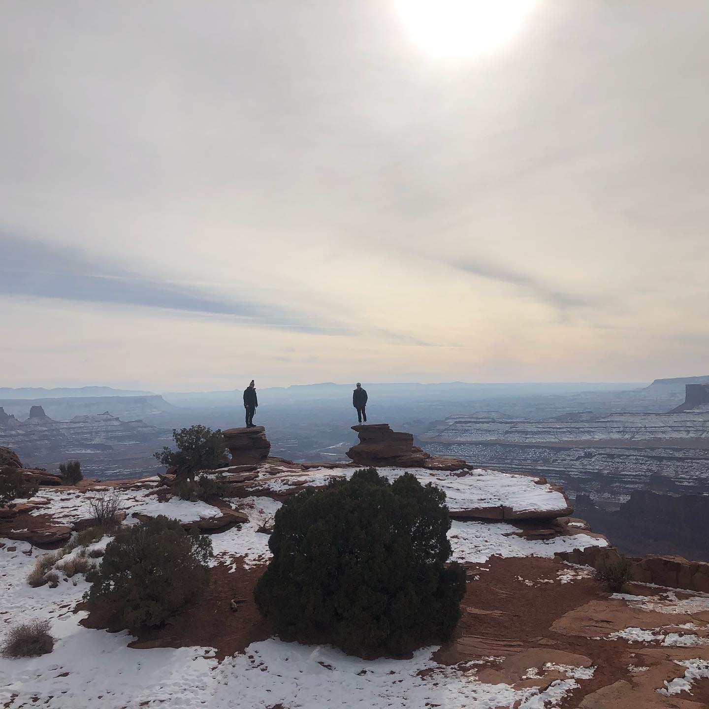
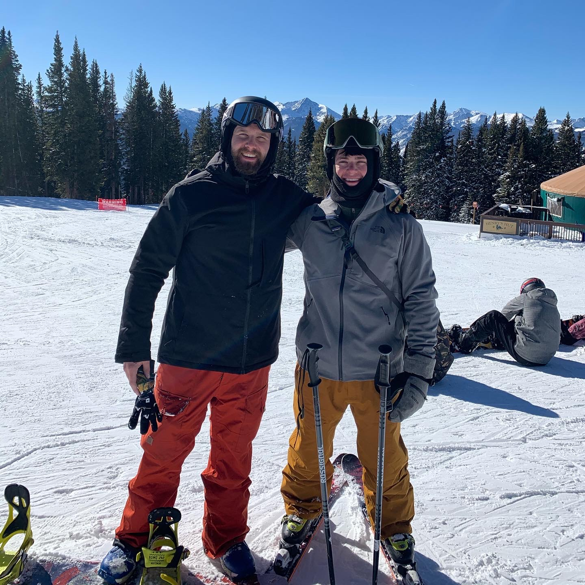

Travels
I am an avid traveller and have had many journeys. As a child I was able to travel throughout the US, Greece, and roadtrip the entirety of Ireland. These travels led me to join the Rotary International Club in 2016 and travel for over a month across Japan, enjoying Japanese homestays and giving presentations on my cultural education. In the 2019-2020 winter, I enjoyed a study abroad program in Rio de Janeiro and witnessed the largest New Years Celebration in the world on the Copacabana Beach. This trip held countless memories and I was gifted with making plenty of Brazilian friends. In the summer of 2020, I embarked on a cross country journey to begin my internship in Portland, Oregon. While in the Northwest, I was able to take a weekend off and travel to the coast of Oregon, drive up to Olympic National Park, and visit friends in Seattle. Driving back east, I was able to spend time at Glacier National Park, Yosemite National Park, Mount Rushmore, Badlands National Park, and many more amazing locations. Within five days of returning to the East, I flew back to Colorado and camped, hiked beautiful forests, and summited mountains, one being 14,000 feet (pictured in slideshow). On New Year's Day of 2021, I drive cross country from Pennsylvania to ski the Rocky Mountains. In a 15 day ski trip kicking off in Northern Colorado, friends and I traversed south through Colorado, cut west to Utah to enjoy the Canyonlands, eventually heading to Idaho where I spent four days. Idaho's amazing backcountry skiing in Sawtooth National Forest and refreshing natural hot springs were unmatched leaving me with a bitter sweet farewell. Within the next 72 hours I had driven through Wyoming to ski once more in a Colorado snow storm, and had left for a straight shot back to Pennsylvania to finish up my final college semester. Hopefully, my future allows many more destinations to visit and many more people to meet.
Brazil
 



Wild West
  


